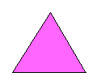
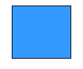
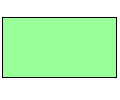
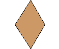

La geometría se propone ir más allá de lo alcanzado por la intuición. David Hilbert propuso a principios del siglo XX otro sistema axiomático, este ya completo. Como en todo sistema formal, las definiciones, no solo pretenden describir las propiedades de los objetos, o sus relaciones. Cuando se axiomatiza algo, los objetos se convierten en entes abstractos ideales y sus relaciones se denominan modelos.
Por ello, es necesario un método riguroso, sin errores; para conseguirlo se han utilizado históricamente los sistemas axiomáticos. El primer sistema axiomático lo establece Euclides, aunque era incompleto.
Esto significa que las palabras «punto», «recta» y «plano» deben perder todo significado material. Cualquier conjunto de objetos que verifique las definiciones y los axiomas cumplirá también todos los teoremas de la geometría en cuestión, y sus relaciones serán virtualmente idénticas al del modelo «tradicional».
En geometría euclidiana, los axiomas y postulados son proposiciones que relacionan conceptos, definidos en función del punto, la recta y el plano. Euclides planteó cinco postulados y fue el quinto (el postulado de paralelismo) el que siglos después —cuando muchos geómetras lo cuestionaron al analizarlo— originará nuevas geometrías: la elíptica (geometría de Riemann) o la hiperbólica de Nikolái Lobachevski. En geometría analítica, los axiomas se definen en función de ecuaciones de puntos, basándose en el análisis matemático y el álgebra. Adquiere otro nuevo sentido hablar de puntos, rectas o planos. f(x) puede definir cualquier función, llámese recta, circunferencia, plano, etc.
| Formulas generales de la geometria | |||
|---|---|---|---|
| Triangulo | Elementos | Formula Perimetros | Formula Área |
|  | b:Base h:Altura l:lado1 m:lado2 n:lado3 |
P = l + m + n | A = b*h/2 |
| Cuadrado | |||
|  | a: Lado | P = 4a | A = a^2 |
| Rectangulo | |||
|  | b: Base h: Altura |
P = 2b + 2h | A = b x h |
| Rombo | |||
|  | a: Lado d: diagonal menor D: diagonal mayor |
P = 4a | A = d*D/2 |